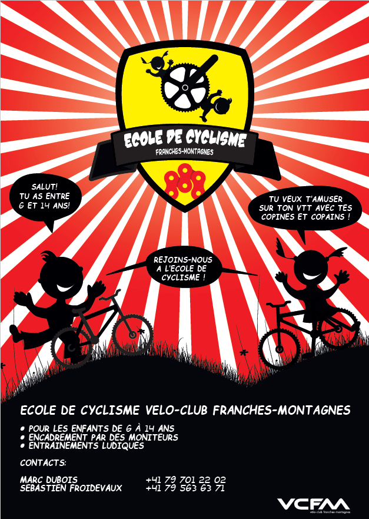

École de cyclisme du VCFM

L'école de cyclisme du VCFM s'adresse aux jeunes de 6 à 15 ans. Elle se veut complémentaire à la structure pour jeunes de 11 à 16 ans déjà en place au sein du Team Humard Vélo Passion.
Les cours sont dispensés chaque jeudi pendant la belle saison. Les jeunes sont encadrés par des moniteurs du Vélo-Club Franches-Montagnes au bénéfice d'une formation J&S ainsi que par des aides formés par ces derniers.
Ces jeunes pilotes reçoivent une formation de base sur la pratique du VTT. L'accent est mis sur l'apprentissage du pilotage, de l'agilité, de l'équilibre et de la maîtrise général de leur monture par des jeux et exercices ludiques.
Sans obligation aucune, nous proposons à ces enfants de participer durant la saison à un critérium, à une course spécialement conçue pour eux lors d'une étape du Trophée du Doubs et à la course des Kids du Tour des Sommêtres.
Le prix de la cotisation annuelle est fixée à CHF 50.00 par enfant. Chaque nouvel adhérent recevra un maillot aux couleurs de l'école de cyclisme du VCFM.
Les détails du programme annuel, les rendez-vous et horaires, ainsi que les détails sur l'équipement nécessaire sont communiqués personnellement après la validation de l'inscription.
moniteurs/trices + aides recherché(e)s
Depuis sa création, l’école de cyclisme rencontre un franc succès. Ceci notamment grâce à des moniteurs et aides compétents et disponibles qui en plus des cours hebdomadaires organisent également quelques participations à des courses ou de belles sorties. Les jeunes sont nombreux et leur motivation fait plaisir à voir. Afin de continuer à leur offrir ces nombreuses activités, le club a besoin de quelques personnes disposées à consacrer un peu de temps à cette relève.
Intéressé(e)? Adressez-vous à Marc Dubois 079 701 22 02 qui vous donnera volontiers plus de renseignements.
Renseignements
Marc Dubois 079 701 22 02
Sébastien Froidevaux 079 563 63 71
Inscription
Toute demande d'inscription à l'école de cyclisme du VCFM doit être soumise par un parent ou par le représentant légal du participant. Un responsable de l'école de cyclisme vous contactera dans les plus brefs délais. Afin de privilégier la qualité de ses prestations et des relations, le nombre de participants à l'école de cyclisme est limité.
